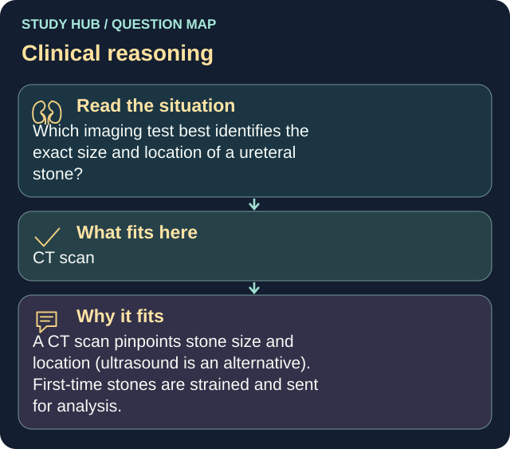

Which imaging test best identifies the exact size and location of a ureteral stone?
Answer
CT scan
Reasoning
A CT scan pinpoints stone size and location (ultrasound is an alternative).
Clinical detail
First-time stones are strained and sent for analysis.
Why the other answers do not fit
- Chest x-ray
- EEG
- Echocardiogram
Shared reasoning for choices without a separate note: A CT scan pinpoints stone size and location (ultrasound is an alternative). First-time stones are strained and sent for analysis.
